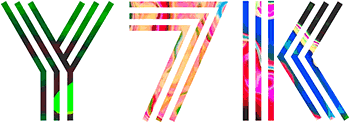

What is
Neverland Space?
Neverland Space is a fictional space. A place outside the real world. A place, where everything is possible. A place, where things can be experienced that can’t be found elsewhere. Neverland Space is a virtual exhibition space. Accessed through the Internet, this website will provide an innovative online art experience. Artists and curators are invited to present artworks exclusively shown at Neverland Space.
They are spread all over the Internet; gifs, animation, virtual sculptures and videos, created by artists who haven’t really been picked up by the art world. This is arguably related to the fact that there hasn’t been an exhibition format which has conquered the problem of how to exhibit the new media artworks in an adequate way. To display works which have been produced for the Internet in a physical environment would be conceptually questionable. Therefore the logical consequence is to create a space for art in the environment for which it was intended: the Internet.
Neverland Space will act as a home base for all digital artists. A platform to present works and help digital art to gain the recognition it deserves. On the other hand, Neverland Space provides a unique experience for art lovers.
Who is
Neverland Space?

Neverland Space was made by the Swiss digital agency Y7K. They create websites, web apps and digital experiences that cross all online channels – simple, beautiful and from a user's perspective.